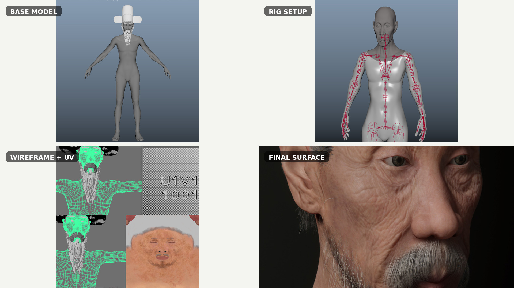
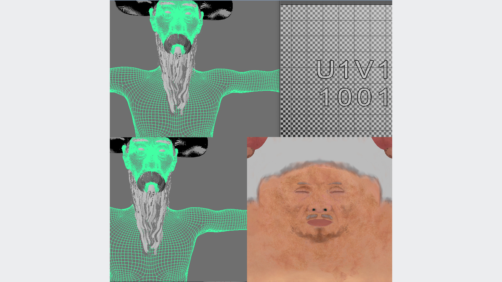
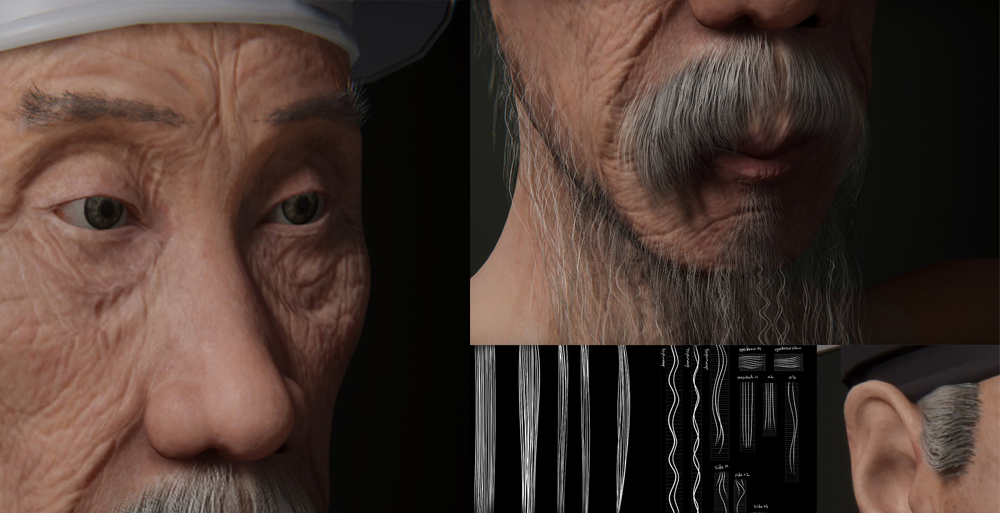

Maya rig feasibility
Separated the face from scanned geometry, reconstructed usable bilateral symmetry with Duplicate Special, reduced and retopologized geometry, and prepared a working character for automatic rigging and engine testing.
Hands-on Maya work across scanned-mesh cleanup, symmetry, rigging, retargeting, facial animation, UV preparation and export to Unity and Unreal. These production cases show what happened in the DCC tools—not only what the final engine renders looked like.
Starting with difficult volumetric scan data, I performed face separation and a bilateral-symmetry rebuild in Maya, cleaned the mesh for feasibility rigging, and tested the character in Unity before preparing more detailed character production for Unreal.


Separated the face from scanned geometry, reconstructed usable bilateral symmetry with Duplicate Special, reduced and retopologized geometry, and prepared a working character for automatic rigging and engine testing.
Used Maya HumanIK and animation layers after MotionBuilder cleanup to repair and adjust captured body performance before Unreal retargeting and baking.
Reconstructed a historical figure for an interactive Unity installation. Maya was used for detailed UV and rig production, XGen hair direction, and facial animation integration. The work continued into real-time character delivery and a visitor-facing interactive system.




Extended a facial blendshape rig and connected recorded iPhone ARKit coefficient data to Maya animation using a Python-assisted CSV workflow, including blendshape-name troubleshooting.
Worked across Maya modeling, surface and hair preparation, captured performance, runtime materials, Unity behavior, and public display constraints.